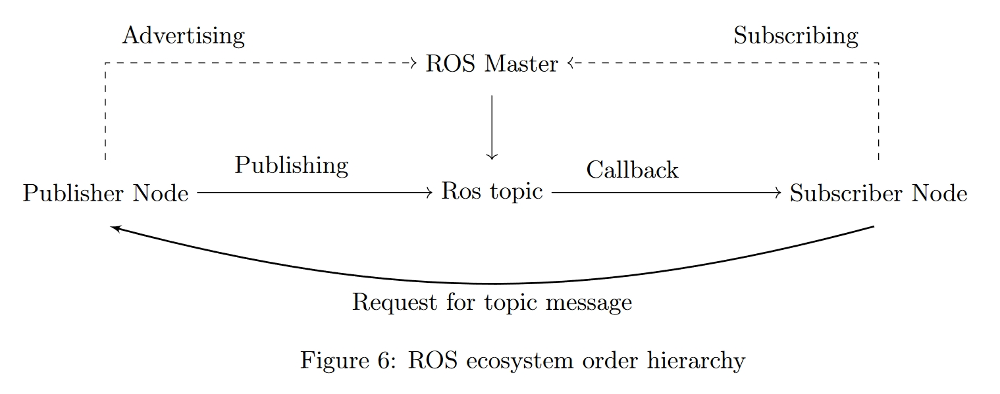

Harald Bryn
Cybernetics engineer
Skills
Work Experience
Cybernetics Engineer Trainee, Evoy
Experience duration: 1 Year
- Participated in the creation of electrical drawings using E3.
- System setup, and creation of test benches.
- Conducted service trips for system installation, troubleshooting, and customer interactions.
- Conduction research on the system
- Modifying and making code for the system using python
- Microservice with code adaptation
Key Achievements
- Measured different systems and outputs running on canbus, utilizing software and DBC files for real-time data reading and plotting.
- Faultfinding during setup
- Programmed the main system according to customer requirements.
- Developed software for automating various internal processes.
- Engaged in learning about the new system running on micro service architecture.
Current Learning
- Preparing to write automation code for the new system running on micro service architecture.


School
Automation and Robotics Engineer, Western University of Applied Science
Bergen, Norway
Main subjects:
The Automation Studies primarily provide an introduction to fundamental engineering disciplines with a special emphasis on electrical engineering, instrumentation, process engineering, and computer science. The specialization courses and some elective courses reflect the focal areas of the specialization, covering key subjects such as:
- Regulation engineering
- Instrumentation and measurement techniques
- Offshore instrumentation
- Industrial data systems
- Industrial data networks
- Microprocessor technology
- Robotics
- Process engineering
Thesis:
- Agrecultural robotic system: Utilizing industrial robotic arm with a 3D-camera to execute a method of spraying pestocide over detected trees and plants

Electronics Engineer, Western University of Applied Science
Bergen, Norway
Main subjects:
The Electronics Studies primarily provide an introduction to fundamental engineering disciplines with a special emphasis on analog and digital electronics. Technical subjects and some elective courses reflect the focus areas of the study program, covering key topics such as:
- Design of "smart" sensors and adaptive circuits based on digital circuits and microprocessors
- Construction and design of analog circuits and measuring instruments
- Industrial data systems, technical data processing
- Analog and digital signal processing
- Telecommunications, signal transmission
- Sensor technology
- Measurement methods based on sound, vibrations, and images
Thesis:
- RISC-V Based Microcontroller in FPGA: Investigated RISC-V, why and how it works, and looked into the surrounding topics necessary to evaluate the technology

About me
Hobbies
- Climbing
- Lifting weights
- Photography
- Reading
- Dancing
Jobs
Throughout the years I've had a number of jobs as listed below:
- Working for a farm as a weeder
- Worked as a strawberry-picker at a farm
- Worked at a grocery-store
- Military after highschool
- Postman during University
×